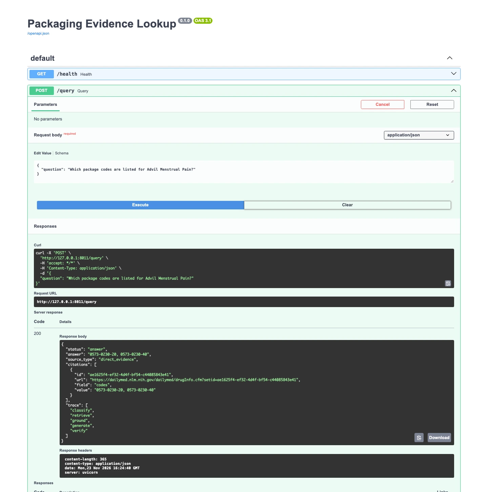

Multimodal RAG
Packaging Evidence Lookup
Can you look up a drug package when all you have is its label image? I built a FastAPI service that reranks DailyMed records with PyTorch and checks generated answers against the cited label.
Python · PyTorch · Qdrant · FastAPI
14/42 to 42/42
Top-1 retrieval improved when the reranker used reference label images on held-out queries.
View API screenshot

